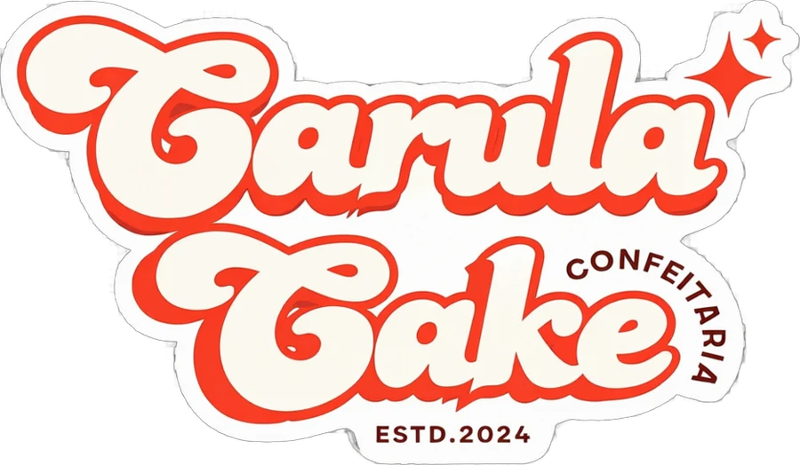
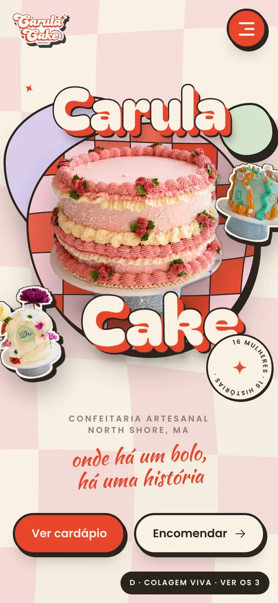
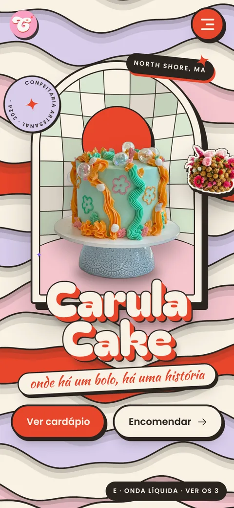
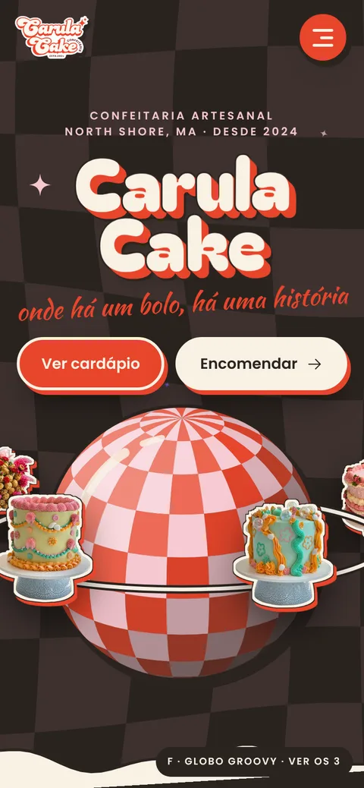

groove anos 70, feito em 2026
Mesma paleta e mesmas fontes nas três, com as fotos reais dos bolos recortadas como camadas. Abra cada uma no celular e no computador: mexa o mouse, role a página e abra o menu.

Papel recortado em camadas: formas que respiram, xadrez líquido com relevo dentro de uma forma orgânica e o bolo real entre as duas palavras do nome. Os adesivos dos outros bolos flutuam em profundidades diferentes e seguem o cursor.
Abrir a capa D →
As ondas da identidade viram tiras de papel empilhadas, cada uma com sombra sobre a de baixo, subindo devagar. No centro, uma janela em arco funciona como diorama: fundo, sol e bolo se movem em profundidades diferentes.
Abrir a capa E →
Fundo chocolate com xadrez escuro ondulando. Um globo xadrez em 3D gira com luz e sombra, e os bolos orbitam em volta dele, passando por trás e pela frente.
Abrir a capa F →